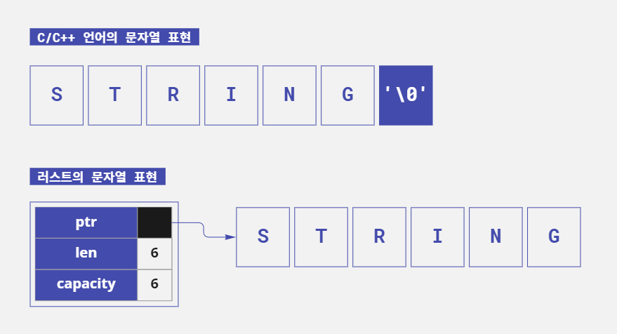

#패스트캠퍼스, #국비지원교육, #메가바이트스쿨, #MegabyteSchool, #개발자취업부트캠프, #내일배움카드
last edited 2023.01.26
러스트의 문자열에 대해 쉬운 설명으로 알아보자
러스트의 문자열인 String과 &str이 어떻게 다른지 알아보자. 그리고 아시아 언어에서 주로 사용되는 멀티 바이트 문자는 어떻게 다뤄야 할지 확인해보자.
러스트의 문자열
러스트에서 문자열을 다룰 때 String 타입 또는 &str타입을 이용한다. 소스 코드에서 큰따옴표(")로 문자열을 감싸는 경우 문자열 리터럴 타입은 &str이 된다.
&str은 변경이 불가능하다. 그래서 값을 변경하거나 함수의 반환 값으로 사용해야 하는 경우에는 String타입을 사용한다.
String 타입은 벡터
String타입은 러스트 내부에서 Vec<u8>타입으로 취급된다. Vec은 가변 길이의 배열인 벡터 타입이다. 그리고 u8은 부호가 없는 8비트 정수, 즉 1바이트 정수다. 즉 String타입은
1바이트 단위로 데이터를 확장할 수 있다. 벡터 타입은 힙 메모리에 저장되므로 확장 가능한 문자열 객체이다.
&str 타입은 슬라이스
소스 코드에서 큰따옴표로 감싼 문자열이 &str이다. &str은 러스트 내부에서 슬라이스인 &[u8]타입으로 취급된다. 슬라이스는 배열의 일부 또는 전체를 참조자로 이용할 수 있는 데이터 타입이다. 그리고
참조자이므로 소유권과 관련이 없다.
C/C++와의 차이점
C 언어에서도 문자열은 1바이트 단위의 가변 배열 데이터로 취급한다. 하지만 러스트는 C 언어와 달리 문자열 끝에 NULL(\0)이 없다. 벡터 타입이므로 바이트 수가 기록되어 안전하게 관리된다.

- C 언어에서는 문자열의 끝이
NULL(\0)이므로 문자열 크기를 알려주지 않으면 알 수 없음 - 러스트에서는 처음부터 문자열의 실제 길이(length)와 메모리에 저장되는 크기(capacity)가 기록됨
러스트의 문자열은 UTF-8
러스트에서 다루는 문자열은 String 타입이건 &str 타입이건 문자 인코딩은 UTF-8로 정해져 있다. UTF-8은 Unicode/UCS로 정의된 문자 집합을 표현하는 문자 인코딩(부호화 방식/문자 코드)
이다.
UTF-8의 특징 중 하나는 1글자를 표시하기 위해 1바이트에서 6바이트 사이의 가변 길이를 이용한다는 점이다. 알파벳이나 숫자는 1바이트를 차지하지만 한글이나 일본어는 3바이트를 차지한다.*
*유니코드로는 2바이트지만 UTF-8로 표현할 때 3바이트가 된다. 따라서 UTF-8 인코딩을 기본으로 사용하는 러스트에서는 인덱스보다 인덱스의 범위를 지정할 수 있는 슬라이스를 기본적으로 사용한다.
String이 Vec<u8>이고 &str이 &[u8]이므로 문자열에서 임의의 1바이트에 접근하는 것도 가능하다. 하지만 바이트 단위로 접근할 때에는 N바이트째가 N글자에 해당하지 않을 수 있다는
점도 기억해둬야 한다.
영어 문자열과 바이트열이 대응하는 것을 확인해보자. 'Rust'라는 문자는 다음과 같이 대응된다. 바이트열은 16진수로 표기된다.
- 'Rust'라는 문자열을 바이트로 표시
| 문자열 | R | u | s | t |
|---|---|---|---|---|
| 바이트열 | 52 | 75 | 73 | 74 |
영어와 숫자는 UTF-8과 ASCII 코드가 동일하다. 그리고 N바이트째 문자는 N번째 문자가 된다.
다음은 '러스트'라는 UTF-8 문자열을 바이트로 표시한 것이다.
- '러스트'라는 문자열을 바이트로 표시
| 문자열 | 러 | 스 | 트 |
|---|---|---|---|
| 바이트열 | eb 9f ac | ec 8a a4 | ed 8a b8 |
'러'는 16진수 바이트로 표시하면 'eb 9f ac'의 3바이트, '스'는 'ec 8a a4'의 3바이트, '트'는 'ed 8a b8'의 3바이트다. 즉 문자열에서 2바이트째 값을 가져와도 '스'라는 문자에 해당하는 것이 아니라 '러'의 2바이트째인 '9f'라는 데이터를 가져오는 것이다.
러스트의 문자열 String및 &str에는 문자 단위로 데이터를 가져오는 chars 메서드와 바이트 단위로 데이터를 가져오는 bytes 메서드가 있다. 이 두 메서드의 차이점에 대해 알아보자.
문자열에서 문자 한 개씩 가져오기
문자열을 하나 만든 뒤 임의의 곳에서 문자 한 개를 가져오는 프로그램을 만들어보자. 러스트는 문자열이 Vec<u8> 타입이라는 것을 알아두자. u8은 부호가 없는 8비트 정수이므로 영어나 숫자 1문자를 저장할
수 있지만 한글은 3바이트(32비트)이므로 저장할 수 없다.
fn main() {
let s = "안녕하세요";
println!("{}", s[0]); // 직접 n번째 문자를 가져올 수 없다.
}위 소스 코드를 컴파일하면 에러가 발생한다.
$ rustc str_index_err.rs && str_index_err
error[E0277]: the type `str` cannot be indexed by `{integer}`
--> str_index_err.rs:3:22
|
3 | println!("{}", s[0]); // 직접 n번째 문자를 가져올 수 없다.
| ^ string indices are ranges of `usize`
|
= help: the trait `SliceIndex<str>` is not implemented for `{integer}`
= note: you can use `.chars().nth()` or `.bytes().nth()`
for more information, see chapter 8 in The Book: <https://doc.rust-lang.org/book/ch08-02-strings.html#indexing-into-strings>
= help: the trait `SliceIndex<[T]>` is implemented for `usize`
= note: required for `str` to implement `Index<{integer}>`
error: aborting due to previous error
이 에러 메시지에서 눈여겨볼 부분은 note 부분이다.
= note: you can use `.chars().nth()` or `.bytes().nth()`
(`.chars().nth()` 또는 `.bytes().nth()`을 이용할 수 있다.)
러스트에서는 문자열을 저장한 변수에 직접 s[N]과 같은 형태로 접근할 수 없으니, 그 대신 chars 또는 bytes 메서드를 이용하라는 조언이다.
chars 메서드는 문자열을 UTF-8 기반으로 1글자씩 분할한 반복자를 반환한다. 그리고 bytes 메서드는 단순히 1바이트 단위로 분할한 반복자를 반환한다.
즉, 1글자씩 가져올 것인지 1바이트씩 가져올 것인지를 명확히 해 그에 맞는 메서드를 선택해야 한다.
러스트의 컴파일 에러 메시지는 이처럼 자세한 정보를 알기 쉽게 표시해주므로 에러 메시지를 읽는 것만으로 대부분의 에러를 해결할 수 있다. 이제 이 조언을 바탕으로 프로그램을 수정해보자. 다음은 chars 메서드를
이용해 1글자를 가져와 출력하는 예다.
fn main() { let s = "안녕하세요"; // 첫 1글자를 가져온다. let ch = s.chars().nth(0).unwrap(); println!("{}", ch); // 안 // 3번째 글자를 가져온다. let ch = s.chars().nth(2).unwrap(); println!("{}", ch); // 하 }
컴파일 후 실행해보면 1번째 문자 '안'과 3번째 문자 '하'가 출력된다.
&str에 슬라이스 사용
앞의 문제를 다르게 해결하는 방법도 있다. &str에 대해 슬라이스를 이용하는 방법이다. 문자 단위가 아니라 바이트 단위로 지정한 문자열을 가져올 수 있다. &str에서 특정 부분의 값을 가져올 때 사용한다.
fn main() { // 첫 번째 글자를 출력 (1) let s2 = "abcdefg"; println!("{}", &s2[0..1]); // a let s = "안녕하세요"; // 첫 번째 1글자를 출력 (2) let ch = &s[..3]; println!("{}", ch); // 안 // 세 번째 1글자를 출력 (3) let ch = &s[6..9]; println!("{}", ch); // 하 }
컴파일 후 실행하면 &str을 슬라이스해 취득한 데이터가 문자열로 출력된다. 이때 바이트 단위를 잘 지정해야 한다. 올바르지 않게 지정한 경우 컴파일 단계에서 에러가 발생한다.
- 영문 문자열이므로
[0..1]또는[..1]과 같은 형태로 첫 번째 글자의 바이트를 가져올 수 있다. - 한글이므로 첫 3바이트(1글자)를 가져온다. 그리고 해당 3바이트를 문자로 출력한다.
- 3번째 글자인 '하'를 출력하기 위해
[6..9]를 지정해 해당 3바이트를 가져와 문자로 출력한다.
&str과 String 상호 변환
&str과 String 타입은 상호 변환이 가능하다. 실제 프로그램으로 확인해보자. 일반적으로 다음과 같은 프로그램은 타입 추론을 이용하므로 타입을 명시하지 않아도 상관없지만 여기서는 타입을 확실히 하기 위해
변수별로 타입을 명시했다.
fn main() { // 문자열 리터럴은 &str 타입 (1) let ss: &str = "베풀면 반드시 돌아온다"; // &str은 String으로 변환 (2) let so1: String = String::from(ss); let so2: String = ss.to_string(); // String을 &str로 변환 (3) let ss2: &str = &so1; let ss3: &str = so1.as_str(); // 출력 println!("{}\n{}\n{}\n{}", so1, so2, ss2, ss3); // 참조 타입 포인터 주소를 표시 (4) println!("{:p}\n{:p}", ss2, ss3); }
컴파일 후 실행해보면 지정한 문장이 4번 출력되고 &str이 가리키는 참조 주소가 표시된다.
- 문자열 리터럴을 변수
ss에 대입한다. 이때 문자열 리터럴 타입은&str이다. &str타입을String타입으로 변환한다.&str타입을String타입으로 변환하는 방법은 소스 코드와 같이 2가지가 있다. 이렇게 해서String객체(인스턴스)를 생성한다.String을 다시&str형식으로 변환한다. 이처럼&str과String변환은 쉽게 할 수 있다.- 참조자 확인용 코드로 (3)에서 참조 타입
&str이 현재 가리키는 주소를 출력한다.println!에"{:p}"를 지정하면 포인터가 가리키는 주소를 출력할 수 있다. '포인터 주소'란 해당 값이 할당된 메모리상의 주소를 말한다.
String 타입은 힙 메모리에 저장되므로 할당된 주소는 실행할 때마다 달라진다. String 타입의 참조자와 as_str 메서드로 얻을 수 있는 참조자가 같은 주소를 가리키므로 두 값이 같음을 알 수
있다.
문자열을 1바이트씩 출력
상황에 따라서는 문자열을 1바이트씩 잘라 이용하거나 바이너리 데이터를 이용해야 하는 경우도 있다. 여기서는 문자열을 1바이트씩 잘라 내용을 표시해보자. 앞에서 언급한 bytes 메서드를 이용해 문자열을 1바이트씩
표시해본다.
fn main() { let pr = "러스트"; // 1바이트씩 출력 (1) for c in pr.bytes() { print!("{:2x} ", c); } // 바이트 수 구하기 (2) println!("\n바이트 = {}B", pr.len()); }
프로그램을 실행하면 문자열이 바이트 데이터로 출력된다.
$ rustc str_tobytes.rs && ./str_tobytes
eb 9f ac ec 8a a4 ed 8a b8
바이트 = 9B
for문으로bytes메서드를 이용해 문자열을 1바이트씩 출력한다.bytes메서드는 반복자를 반환하므로for문을 이용할 수 있다.len메서드를 이용해 바이트 수를 표시한다. 러스트에서 실수하기 쉬운 것 중 하나는&str의len메서드다.&str의len메서드는 문자 길이가 아니라 바이트 길이를 반환한다.
러스트에서 착각하기 쉬운 점 - 문자 수와 바이트 수
&str의len메서드는 문자열이 아니라 바이트 길이를 반환한다.abc와 같이 영어 문자열에len메서드를 이용하면 3을 반환하지만맛있다라는 한글에len메서드를 이용하면 9를 반환한다.
문자열을 1자씩 출력
이번에는 문자열에서 문자 단위로 구분해 출력해보자. 문자 단위를 다루기 위해서는 chars 메서드를 이용한다.
fn main() { let pr = "구슬이 서 말이라도 꿰어야 보배"; // 1자씩 표시 (1) for c in pr.chars() { print!("[{}]", c); } // 글자 수를 세기 (2) println!("\n글자 수 = {}자", pr.chars().count()); // Vec<char>로 변환해 처리 (3) let pr_chars: Vec<char> = pr.chars().collect(); println!("Vec<char> : {:?}", pr_chars); for c in pr_chars.iter() { print!("({})", c); } println!("\n글자 수 = {}자", pr_chars.len()); }
컴파일 후 실행해보면 문자열 안의 문자가 1자씩 출력된다.
&str의chars메서드와for문을 이용해 대괄호([])에 넣어 1자씩 출력한다.- 글자 수를 센다.
chars메서드는 반복자를 반환하므로count메서드를 이용하면 요소의 수를 셀 수 있다. chars메서드를 이용해Vec<char>타입으로 변환한 뒤 문자열을 처리한다. 벡터의iter메서드와for문을 이용해 1자씩 처리할 수 있다. 여기서 변수pr_chars는 이미 글자별로 분리된 벡터 타입이므로len메서드를 이용하면 바이트 수가 아니라 글자 수(즉 벡터의 길이)를 반환한다.
u8이 기호 없는 8비트 정수(1바이트)로 문자를 표현하는 반면 char 타입은 32비트(4바이트)로 1문자를 표시한다. 이 부분에서도 러스트의 언어적 성격을 엿볼 수 있다. 처음부터 Vec<char>를
문자열 내부 표현으로 하는 것이 아니라 Vec<u8>을 문자열로 표현한다. 그리고 필요에 따라 Vec<char>로 변환해 처리 한다.
라이프타임
수명(Lifetime)이라면 보통 생애, 생존 기간을 의미한다. 러스트에서의 라이프타임은 값을 참조할 수 있는 범위(Scope)를 의미한다. 라이프타임은 아포스트로피(')를 붙여 표현한다. 그리고 대부분
소문자만을 이용하여 짧은 영문자 한 개(a 등)를 이용하는 경우가 많다.
값이 일반적인 라이프타임 범위를 가지고 있다면 컴파일러는 값의 유효 범위(라이프타임)를 추론할 수 있다. 따라서 라이프타임 지시자를 생략할 수 있다. 하지만 라이프타임 지시자를 반드시 지정해야 하는 경우도 있다.
참고로 가장 긴 라이프타임을 가지는 것은 'static이다. 이것은 러스트 프로그램이 시작할 때부터 종료될 때까지 존재한다. 문자열 리터럴의 타입은 &str이지만 라이프타임을 명시하는
경우 &'static str과 같이 기술한다.
다음은 echo함수를 정의해서 이용하는 프로그램으로 &'static str타입을 인수로 받아 처리한다.
// &'static str을 이용하는 함수 (1) fn echo(s: &'static str) { println!("{}", s); } fn main() { // 문자열 리터럴(&'static str)을 지정 (2) echo("웅변은 은이요"); echo("침묵은 금이다"); // 아래 주석 부분은 에러가 발생한다 (3) // let s = String::from("테스트"); // echo(&s); }
컴파일 후 실행해보면 echo함수 안에 지정한 문자열이 출력된다.
- 함수를 보면 라이프타임 지시자를 붙여
&'static str을 인수로 지정했다. 즉&str타입이며'static라이프타임을 가진 참조자만을 인수로 사용할 수 있다. - 큰따옴표로 이루어진 문자열을 지정했는데 이는
&str타입이다. 그리고&str타입은'static이 생략됐다. 즉 함수의 인수로 라이프타임이'static인 문자열 리터럴을 지정했다. 따라서 문제없이 문자열 리터럴 내용이 출력된다.
주석 처리된 (3) 부분의 주석을 해제한 뒤 실행해보자. 변수 s의 참조자인 &s는 main함수 안에서만 살아있을 수 있다. 따라서 'static보다 짧은 라이프타임을 가지므로 echo함수에서
호출하면 에러가 발생한다. 함수의 인수에 라이프타임 지시자를 지정한 경우 그보다 짧은 라이프타임을 가진 값을 사용할 수 없기 때문이다.